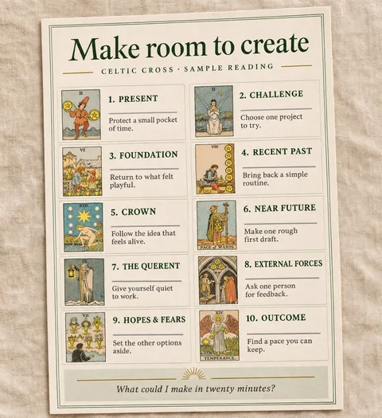
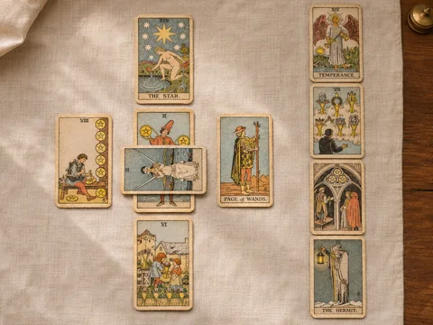

PERSONAL READINGS
Insight that speaks to you.
Tuned for real card readings, our AI engine turns your spread and your question into clear, personal insight.
Draw your own tarot or playing cards. Arcana helps you read the spread, reflect on what it brings up, and keep the insight.
One free reading per day. No account needed.
A FINISHED READING / 10 CARDS · CELTIC CROSS
“How can I make space for a creative project again?”

A FINISHED KEEPSAKE
All ten positions, with a takeaway and a prompt to return to.
Fictional example. No upload or free reading used. View printable keepsake

FROM THE TABLE
A Celtic Cross laid out with a physical tarot deck.
Personal readings, a journal for your journey, and a beautiful reminder of your next step.
Tuned for real card readings, our AI engine turns your spread and your question into clear, personal insight.
Save past readings and personal thoughts in your journal. See the patterns. Notice your progress.
Download a printable infographic of your reading. Keep your insight close and your next step in focus.
Four simple steps. Your own cards, every time.
Choose a layout that fits what’s on your mind.
Shuffle your own deck and lay out your cards.
Upload your spread, or enter your cards by hand.
Check your cards, then choose an AI or Classic reading.
Bring your cards. Bring your question. Find a little direction.
No account needed to begin.
Draw your own tarot or playing cards. Arcana helps you read the spread, reflect on what it brings up, and keep the insight.
One free reading per day. No account needed.
A FINISHED READING / 10 CARDS · CELTIC CROSS
“How can I make space for a creative project again?”
A FINISHED KEEPSAKE
All ten positions, with a takeaway and a prompt to return to.
Fictional example. No upload or free reading used. View printable keepsake
FROM THE TABLE
A Celtic Cross laid out with a physical tarot deck.
Personal readings, a journal for your journey, and a beautiful reminder of your next step.
Tuned for real card readings, our AI engine turns your spread and your question into clear, personal insight.
Save past readings and personal thoughts in your journal. See the patterns. Notice your progress.
Download a printable infographic of your reading. Keep your insight close and your next step in focus.
Four simple steps. Your own cards, every time.
Choose a layout that fits what’s on your mind.
Shuffle your own deck and lay out your cards.
Upload your spread, or enter your cards by hand.
Check your cards, then choose an AI or Classic reading.
Bring your cards. Bring your question. Find a little direction.
No account needed to begin.
One question is enough. You can also continue with an open reading.
Use the deck in your hands. Arcana will keep its card names and meanings.
Start small: one card for a daily focus, three for context, or six for a deeper look.
Life stage helps Arcana keep the language relevant and age-aware.
Arcana uses AI for reflective guidance only. It is not medical, legal, financial, or mental-health advice, and it should not replace trusted human support or professional care.
Shuffle with your question in mind. Arcana will guide each position next.
Start by choosing one question or situation you want the cards to reflect back.
Find a quiet place where you can shuffle, draw, and photograph your spread clearly.
Shuffle your deck while holding the question in mind; the wording can be simple.
Draw your cards and place them in the spread positions shown in the next step.
Draw from your physical deck, upload your spread, or enter the cards by hand.
Check each card and its orientation before you start your reading.
Add at least one card from your spread to continue.
Arcana already sent your photo to Gemini for card identification.
What do you want to remember about this reading?
Free keeps up to 3 readings in this browser.
Changing devices or clearing local data? Download a backup from your journal.
Saved in this browser.
Download a backup if you’re changing devices or clearing browser data.
Cards already laid out
Choose your layout, then add the physical cards you drew.
Helps Arcana tailor the language of your reading.
Choose a layout to get started.